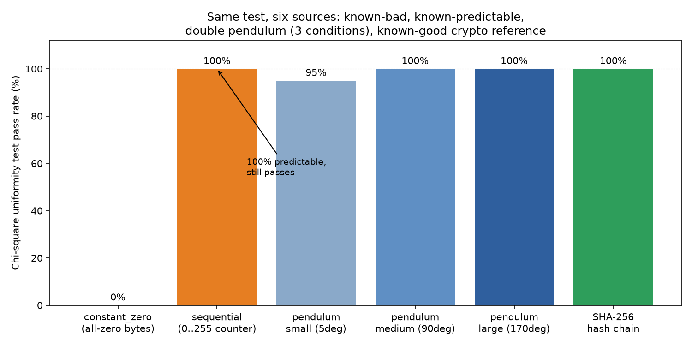

이중진자를 통한 무작위성 연구
"무작위가 실제로 존재하는가"라는 질문에서 출발해, 이중진자의 혼돈 운동을 이용한 무작위성을 실험·통계로 검증한 연구.

- 질문
- 물리적 혼돈이 암호학적 무작위성을 만드는가
- 방법
- 이중진자 시뮬레이션 60회(초기 진폭 3조건 × 20회) + 카이제곱 균등성 검정, SHA-256 해시열 대조군 비교
- 결과
- 가정은 지지되지 않음 — 결과를 그대로 보고하고 검정 방법의 한계까지 함께 밝힘
, 제대로 된 친구 없이 혼자 지내는 시간이 길었다. 먼저 말을 걸 줄 몰랐고, 누군가 다가와 주기만을 기다렸다. 기다림은 대개 아무 일 없이 끝났다. 집에 돌아와 부모님이 "오늘 어땠어?" 물으면 나는 늘 "그냥 괜찮아"라고만 답했다. 정말 괜찮은 줄 알았던 게 아니라, 괜찮지 않다는 말을 어떻게 꺼내야 할지 몰랐던 거였다.
바뀐 건 , 부산 양정고등학교로 전학을 가면서다. 낯선 학교로 가는 게 두려웠지만, 그보다 더 두려운 건 원래 다니던 교실에 하루라도 더 앉아 있는 것이었다. 나는 사람을 대하는 태도 자체를 바꾸기로 했다. 화가 난다고 그 감정을 곧장 쏟아내기보다, 상대가 왜 나를 화나게 했는지 먼저 헤아려보기로 한 것이다. 전학 첫날, 나는 옆자리 친구에게 화장실 위치를 먼저 물어봤다. 아주 사소한 질문이었지만, 내가 먼저 누군가에게 뭔가를 물어본 몇 년 만의 순간이었다.
그 뒤로 7년, 그 다짐은 말이 아니라 장면으로 남았다. , 광안리 해변을 걷던 중 미아를 찾는다는 안내 방송이 나왔는데 마침 방송 속 인상착의와 똑같은 아이가 눈앞에 있었다. 나는 망설임 없이 다가가 이름을 물었고, 안내소까지 함께 걸어가 부모님과 만나게 해드렸다. 에는 함께 과제를 하던 동료와 말투 문제로 언성이 높아졌을 때 나는 그날 저녁 바로 먼저 연락해 사과했다. 에는 길에서 짐을 든 어르신을 보고 망설임 없이 다가가 짐을 나눠 들었다.
과 에는 나에게 무례하게 구는 사람과 지각할 뻔한 상황에서도 화를 내지 않고 넘겼다. 에는 카페 아르바이트 중 갑자기 손님이 몰려 혼자 매장을 맡게 됐을 때도, 순서를 하나씩 정리하며 침착하게 대응했다. 함께 일하는 동료는 "이런 상황에서 그렇게 흔들리지 않는 거 진짜 대단하다"고 말해주었고, 다른 동료들은 "의견이 갈릴 때도 감정적으로 반응하지 않고 사실 위주로 정리해준다"고 말해주었다.
밤에는 한 과제에서 며칠째 막혀 자정이 넘도록 같은 오류를 붙잡고 있었다. 그만두고 싶었지만 나는 도구를 붙잡고 처음부터 다시 설명하며 끝까지 밀어붙였고, 결국 그날 안에 마무리했다. 이 끈기는 그전에도 있었다. 혼자 독학으로 만든 첫 게임을 완성할 때도, 4주간 매일 저녁 시간을 쏟아 백엔드 프로젝트를 끝냈을 때도 마찬가지였다.
지금 나는 혼자였던 그때의 나와, 먼저 다가가고 화내지 않고 끝까지 붙잡는 지금의 나 사이에 2019년 그 전학이 있었다는 걸 안다. 화려한 이야기는 아니다. 다만 나는 이제 어려운 순간이 와도 문을 걸어 잠그기보다 먼저 손을 내밀고, 문제를 끝까지 붙잡는 쪽을 선택할 수 있다. 그것만으로도 충분히 멀리 왔다고 생각한다.
앞으로도 개발·보안 분야에서, 문제를 끝까지 붙잡고 원인을 찾아내는 사람으로 성장하고 싶다. 먼저 다가가고, 꾸준히 준비하고, 흔들리지 않고 끝까지 해내는 사람 — 그것이 지난 시간 동안 내가 확인한 나다.
"무작위가 실제로 존재하는가"라는 질문에서 출발해, 이중진자의 혼돈 운동을 이용한 무작위성을 실험·통계로 검증한 연구.

예정
연락처: san1425865@gmail.com